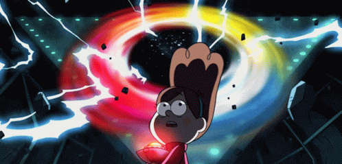

My name is James Lin, and currently study in SAIT.Favorite animation will be Gravity falls and Adventure time, but since the picture I put here is Gravity falls I will mainly talk about that.
This photo shows the main character that will follow us through the series. From left to right are Soos, Dipper, Stan Pines, Mabel, and wendy. What I really loved about this series is the everyday life that happened to the twins Mabel and Dipper. It's always designed for Gravity Falls to be a finite series about one epic summer.
The things in this place are just bizarre, after few epsoied you can understand there is a man who study all the stranger thing in this place and even wrote them into dairey. One of the main character Dipper happened to have one of them. They call them the Journal.
For me what’s really attractive to me about Gravity falls, it’s all about the character interactive, How they act after certain events. After people had betrayed or lied to them.
send feedback